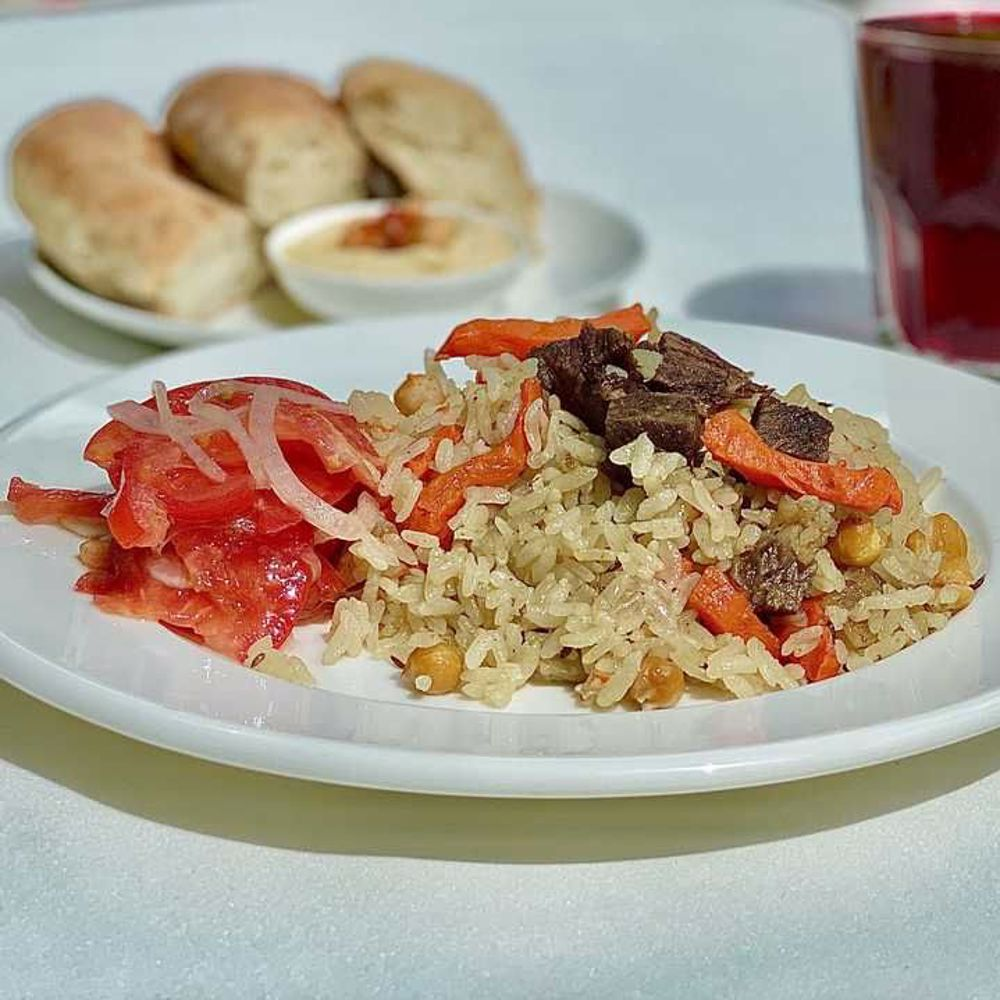
Musafir · кримськотатарська кухня
Що замовити в Musafir?
Страви, які гості оцінили на 5,0 →
1/6

Страви, які гості оцінили на 5,0 →
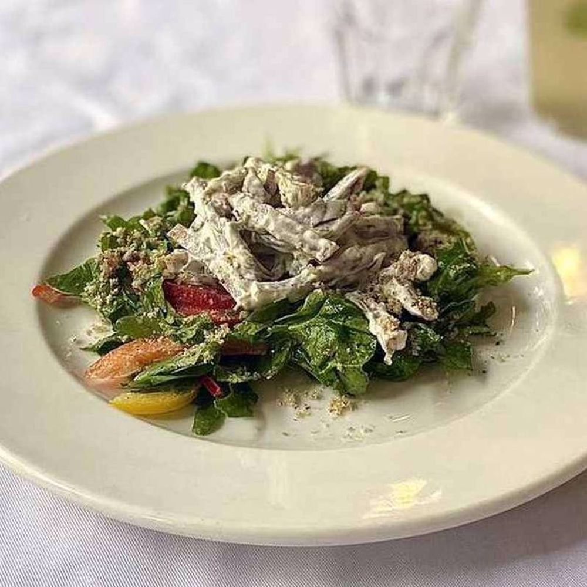
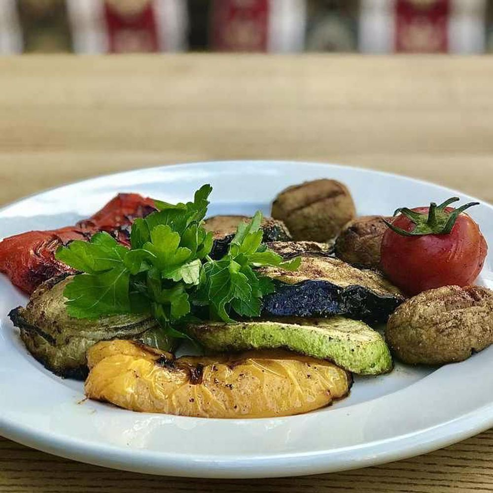
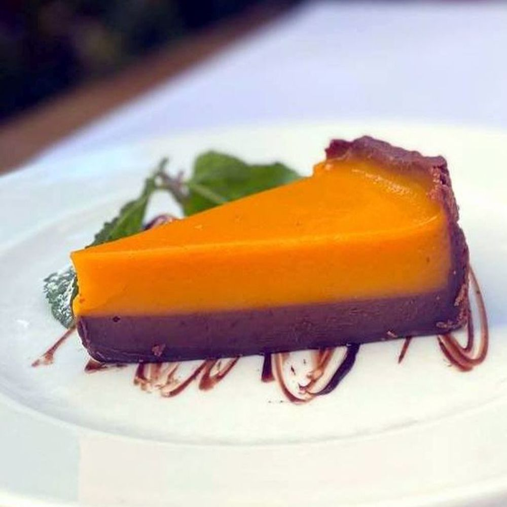
Поставте оцінку страві на TipMyMenu — так інші не помиляться з вибором.
посилання в біоціни й оцінки з меню на TipMyMenu, 26.11.2026
ДЛЯ КАФЕ Й РЕСТОРАНІВ
за 3 хвилини і безкоштовно
Інструкція в 3 кроки — збережіть 📌
Знайдіть свій заклад у пошуку або на карті і натисніть «Редагувати профіль».
Google покаже кнопку «Меню» протягом кількох днів.
Посилання на меню
Створимо безкоштовно: меню з цінами й фото, QR на столи, і посилання для Google Maps готове.
tipmymenu.com/uk/restaurants/aboutДЛЯ ВЛАСНИКІВ ЗАКЛАДІВ
Без маркетолога й без оплати.
Покази в Google
скільки разів заклад побачили
Переходи
скільки людей відкрили меню
Скани QR
на столах у залі
Оцінки страв
що гостям сподобалось
Холодно? 🧣
Київ · ціни з меню
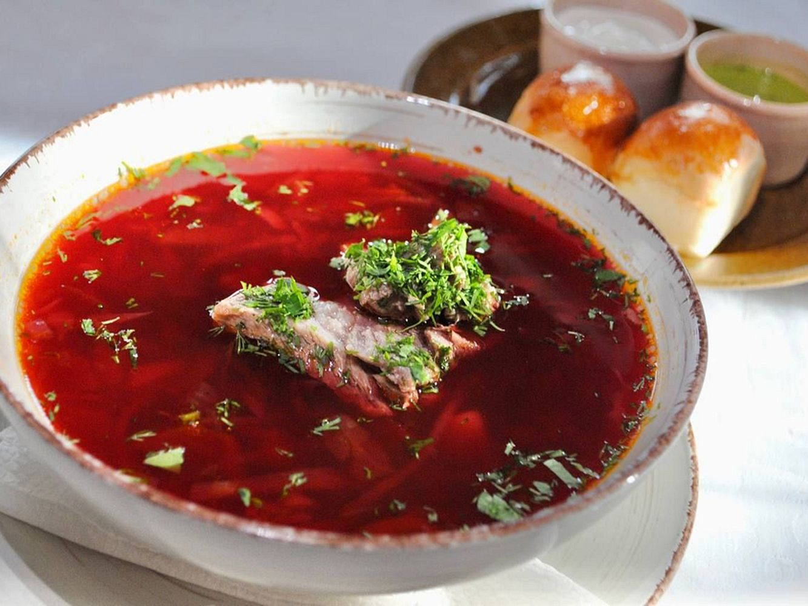
Опанас · парк Шевченка
зазвичай у Києві ~195 ₴
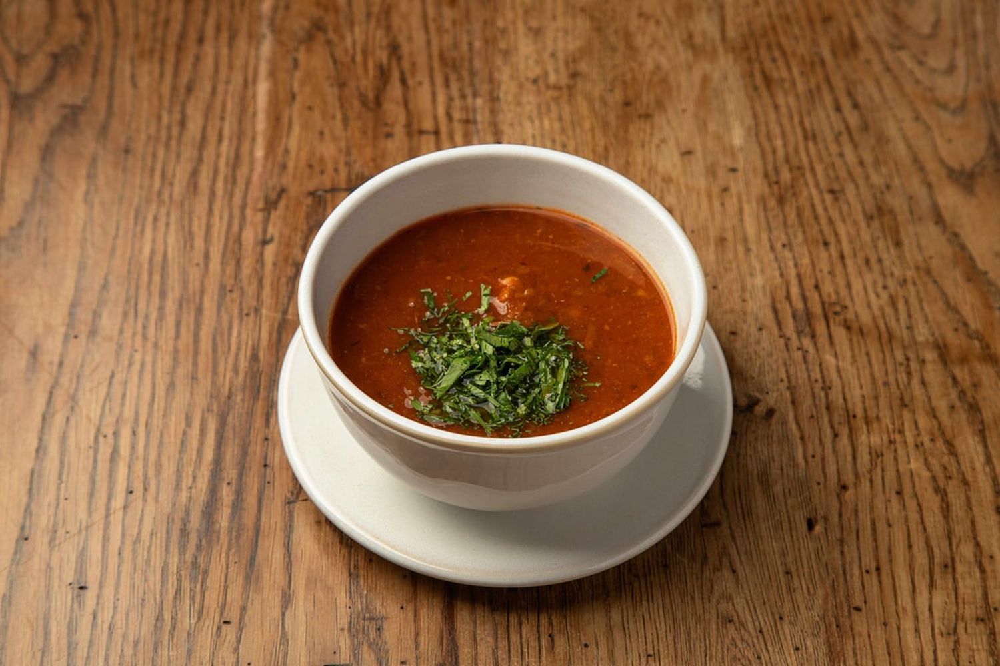
Кувшин
зазвичай у Києві ~183 ₴
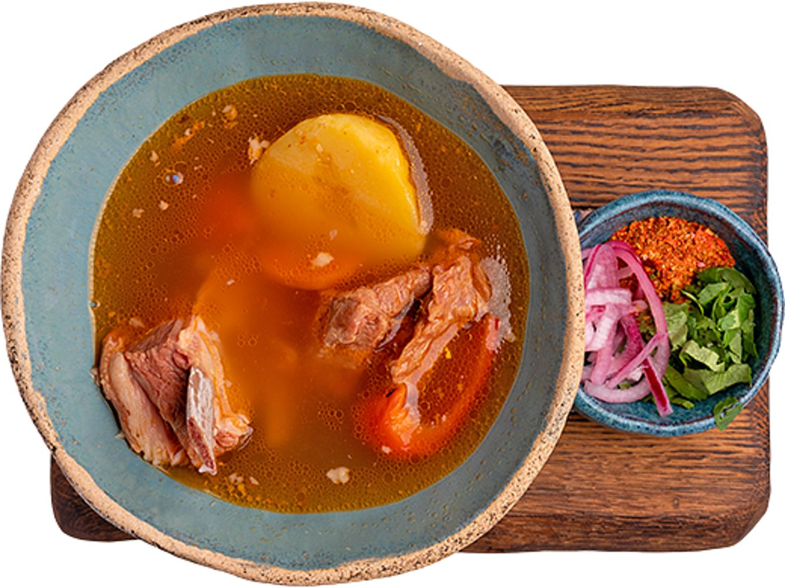
Чачапурі · бул. Шевченка
зазвичай у Києві ~225 ₴
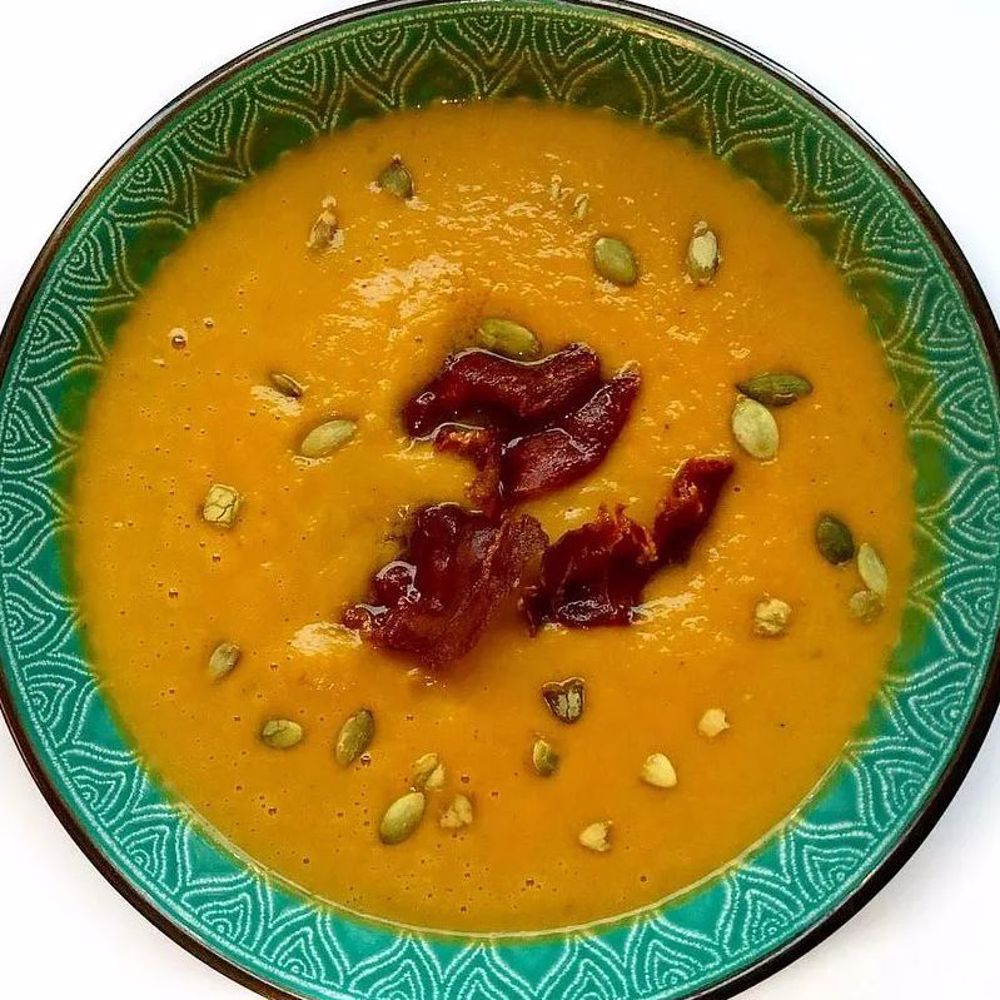
99 Ларі
зазвичай у Києві ~229 ₴
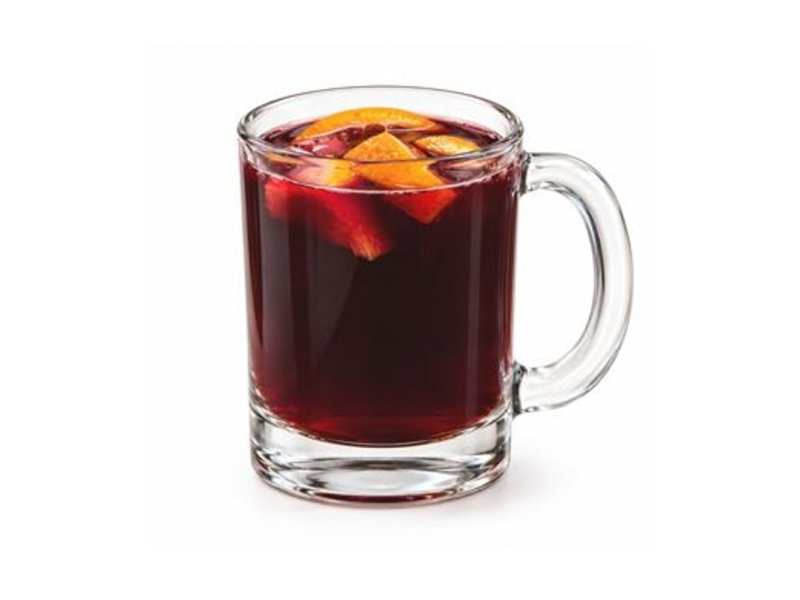
Very Well Cafe
зазвичай у Києві ~160 ₴
ціни з меню на TipMyMenu, 26.11.2026
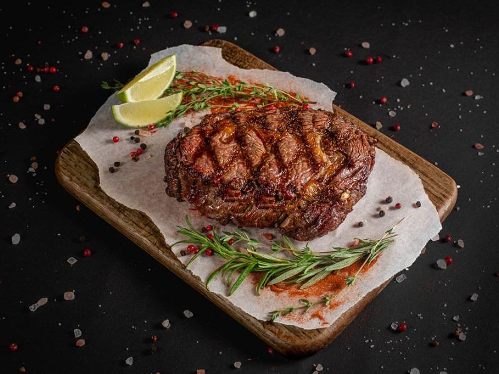
Стейк рібай — ціни з меню:
ціни на 26.11.2026 · вага порції в закладах різна
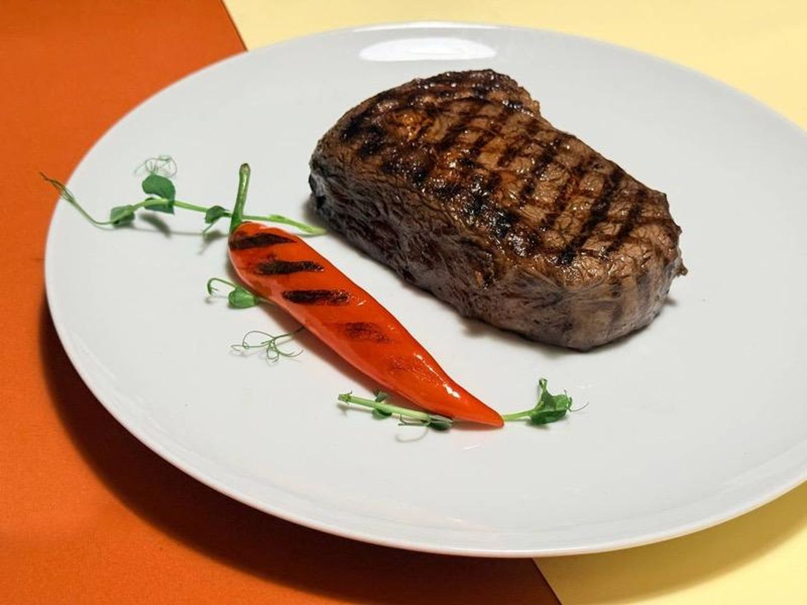
Зазвичай —
14 закладів у Києві